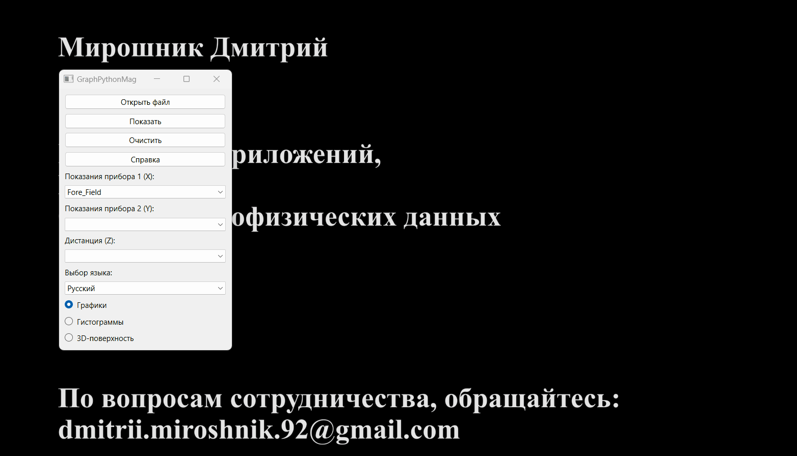
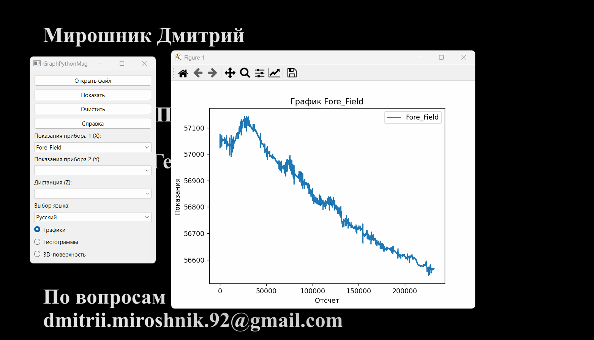

To aplikacja służąca do wizualizacji różnych danych geofizycznych.
Zawiera możliwość tworzenia wykresów, histogramów i powierzchni 3D o jakości typograficznej.
Dane liczbowe w formacie tabelarycznym, zapisane w pliku CSV, mogą być używane jako dane wejściowe.
Interfejs programu
Kliknij przycisk "Otwórz", aby znaleźć i otworzyć plik CSV źródłowy.
Użyj menu rozwijanego, aby wybrać odpowiednie dane.
Aby wyczyścić dane, kliknij przycisk "Wyczyść".
Aby wykonać wizualizacje graficzne, kliknij przycisk "Pokaż".

Aby zmienić język interfejsu, wybierz jeden z dostępnych języków w menu rozwijanym "Wybór języka".
W razie pytań, możesz uzyskać pomoc, klikając przycisk "Pomoc".
Wykresy
Do tworzenia prostych wykresów używana jest biblioteka naukowa Matplotlib.
Zaimplementowano następujące rodzaje wykresów w tej aplikacji:
Prosty wykres. Aby utworzyć prosty wykres, wybierz wartości jednej z dwóch kolumn: "Wskazania urządzenia 1" lub "Wskazania urządzenia 2".
Wykres kombinowany. Aby porównać pomiary dwóch urządzeń, wybierz wartości dwóch kolumn: "Wskazania urządzenia 1" i "Wskazania urządzenia 2".
Wykres w zależności od odległości. Możesz również łączyć różne opcje wykresów w zależności od odległości. Aby to zrobić, wybierz wartość kanału odległości z menu rozwijanego "Odległość".
Histogramy
Do tworzenia histogramów rozkładu normalnego używana jest biblioteka Seaborn, rozszerzenie Matplotlib.
Zaimplementowano różne opcje wyświetlania rozkładu normalnego w tej aplikacji:
Prosty histogram, nakładający się na krzywą rozkładu normalnego.
Aby to zrobić, wybierz wartości jednej z dwóch kolumn: "Wskazania urządzenia 1" lub "Wskazania urządzenia 2".
Łączone histogramy. Aby porównać pomiary, wybierz wartości dwóch kolumn: "Wskazania urządzenia 1" i "Wskazania urządzenia 2".
Rozkład wartości w zależności od odległości. Możesz również łączyć różne opcje wyświetlania w zależności od odległości. Aby to zrobić, wybierz wartość kanału odległości z menu rozwijanego "Odległość".
Praca z oknem Matplotlib
Okno do wyświetlania wykresów naukowych - Matplotlib, umożliwia użytkownikowi różne działania, takie jak:
Przeciąganie wykresu;
Zmiana skali;
Wyświetlanie obszaru;
Zmiana etykiet osi;
Zmiana koloru;
Zapisywanie wykresu w wybranym formacie itp.

Powierzchnie 3D
Do tworzenia powierzchni 3D używana jest biblioteka Plotly.
Aby utworzyć powierzchnię, wybierz wszystkie 3 kolumny: X, Y i Z. !!!Wszystkie współrzędne muszą być w układzie prostokątnym!!!
Praca z oknem powierzchni 3D
Okno do wyświetlania powierzchni 3D umożliwia użytkownikowi różne działania, takie jak:
Przeciąganie;
Zmiana skali;
Obracanie;
Odczytywanie danych;
Zapisywanie obrazu w wybranym formacie itp.
Integracja z OasisMontaj
Ta aplikacja umożliwia pracę z dowolnym plikiem CSV. Jednakże, ponieważ została ona stworzona na zamówienie AO "Yuzhmorgeologia",
omówimy proces eksportu bazy danych OasisMontaj do pliku CSV.
Kroki w środowisku OasisMontaj są następujące:
Baza danych / Eksport / CSV itp.;
Wybierz parametry zapisu;
Kliknij "Ok".
Kontakt
GraphPythonMag v 1.2.1
Autor: Dmitrii Miroshnik
Tworzenie aplikacji
Projektowanie stron internetowych
Przetwarzanie danych geofizycznych
W sprawie współpracy: dmitrii.miroshnik.92@gmail.com.
Możesz także podziękować Autorowi.
Będzie wdzięczny za wsparcie i opinie!